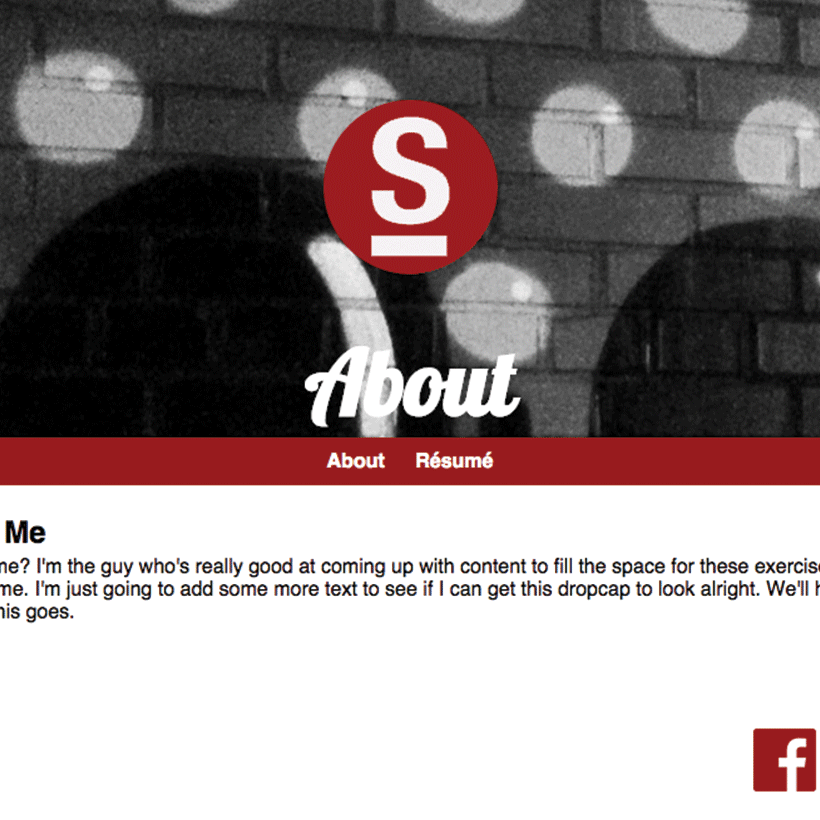

Résumé
Assignment:Create your own personal website. Create an about me page and style it with CSS. Add a resume page and link the two together.
Style the page however you want. We took at look at color (i.e. red, #ff0000, rgb(255, 0,0)), background-color, font-weight (bold, normal), font-family (i.e. Arial, "Times New Roman"), font-style (normal, italic), text-decoration (underline, none), text-align (center, left, right).